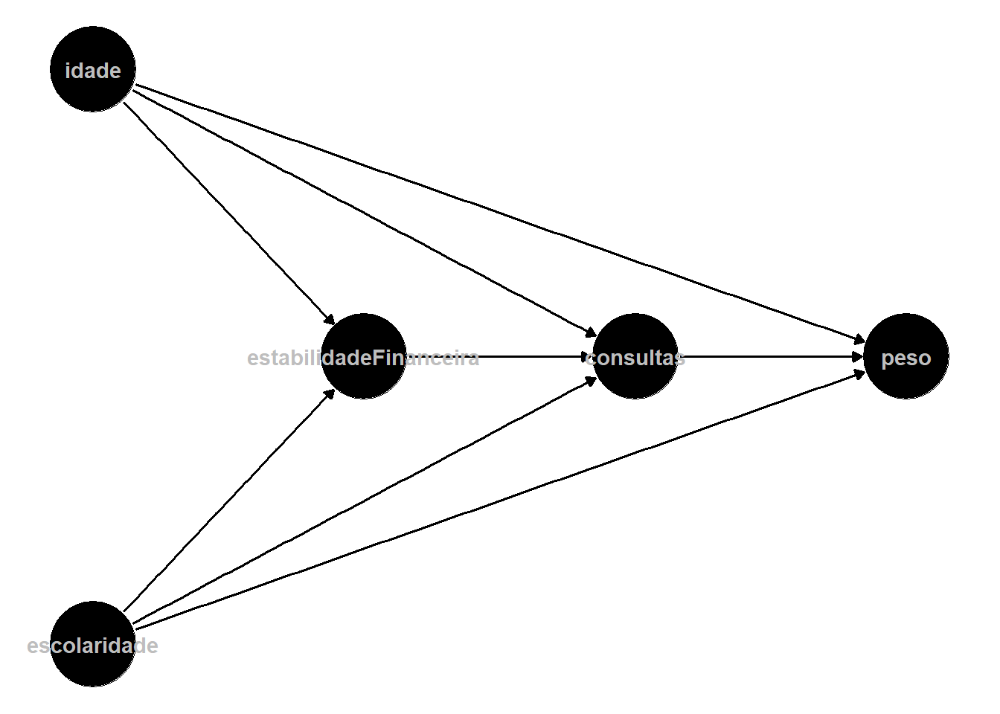
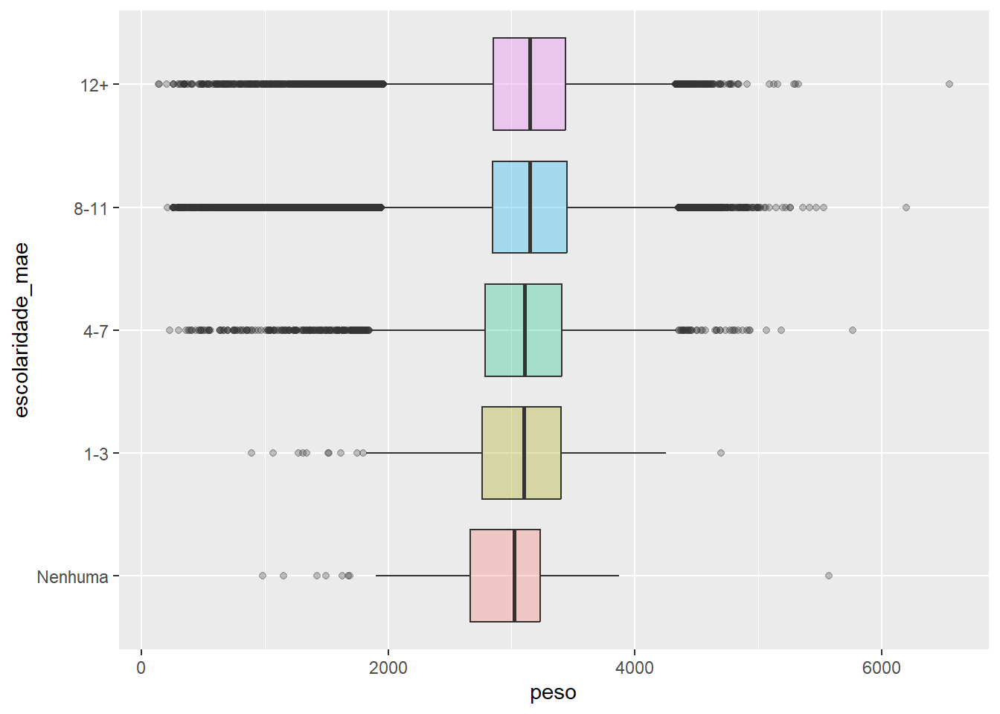
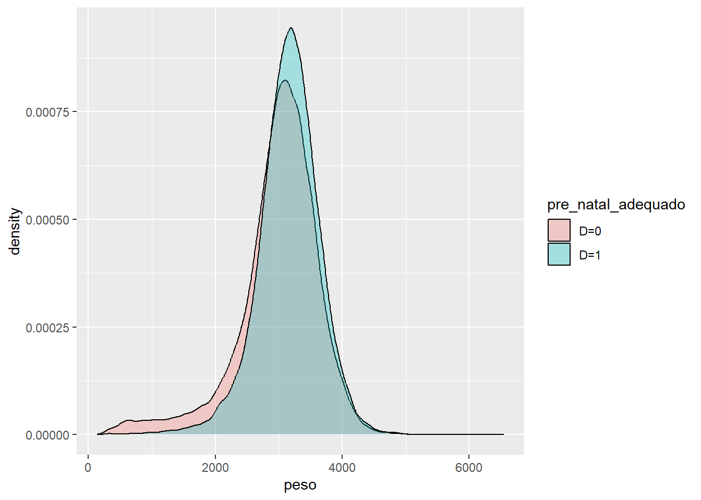
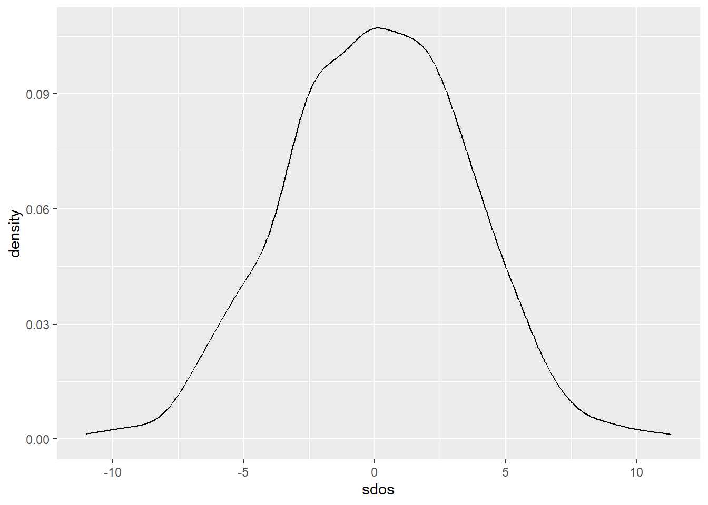

# carregando os pacotes
library(microdatasus)
library(dplyr)
library(ggplot2)
# lendo os dados
data <- fetch_datasus(
year_start = 2023, month_start = 1, year_end = 2023, month_end = 12,
information_system = "SINASC", uf = "GO"
)Resolução da lista 4
Curso de inferência causal
Parte I - Preparação dos dados e correlações
1. Preparação dos dados
Seleção das colunas necessárias, de acordo com a referência.
s_data <- data |>
select(PESO, IDADEMAE, ESCMAE, CONSULTAS, PARTO) |>
mutate(
peso = as.numeric(PESO),
idade_mae = as.numeric(IDADEMAE),
escolaridade_mae_numerico = as.numeric(ESCMAE),
escolaridade_mae = factor(
ESCMAE,
levels = c('1', '2', '3', '4', '5', '9'),
labels = c('Nenhuma', '1-3', '4-7', '8-11','12+', 'ignorado'),
# ordered = TRUE
),
consultas = as.numeric(CONSULTAS),
consultas_factor = factor(
CONSULTAS,
levels = c('1', '2', '3', '4', '9'),
labels = c('Nenhuma', '1-3', '4-6', '7+', 'ignorado'),
ordered = TRUE
),
parto = factor(
PARTO,
levels = c('1', '2', '9'),
labels = c('vaginal', 'cesareo', 'ignorado')
)
) |>
select(peso, idade_mae, escolaridade_mae_numerico, escolaridade_mae, consultas, consultas_factor, parto) |>
na.omit() |>
# removendo as colunas marcadas como 'ignorado'
filter(consultas != 9 & escolaridade_mae != 'ignorado' & parto != 'ignorado')
summary(s_data) peso idade_mae escolaridade_mae_numerico escolaridade_mae
Min. : 135 Min. :11.00 Min. :1.000 Nenhuma : 61
1st Qu.:2844 1st Qu.:22.00 1st Qu.:4.000 1-3 : 455
Median :3150 Median :27.00 Median :4.000 4-7 : 6350
Mean :3110 Mean :27.45 Mean :4.204 8-11 :58569
3rd Qu.:3444 3rd Qu.:32.00 3rd Qu.:5.000 12+ :26088
Max. :6550 Max. :58.00 Max. :5.000 ignorado: 0
consultas consultas_factor parto
Min. :1.000 Nenhuma : 958 vaginal :29070
1st Qu.:4.000 1-3 : 4499 cesareo :62453
Median :4.000 4-6 :16725 ignorado: 0
Mean :3.688 7+ :69341
3rd Qu.:4.000 ignorado: 0
Max. :4.000 2. Identificando as variáveis no framework causal
Definindo o tratamento \(D_i\) como o número adequado de consultas pré-natal (masi de 7 consultas).
# Criação da variável de tratamento
t_data <- s_data |>
mutate(
pre_natal_adequado = ifelse(consultas == 4, 1, 0)
)- A proporção de bebês cujas mães realizaram o pré-natal adequado é dado por
t_data |> group_by(pre_natal_adequado) |> summarise(n = n(), proporcao = 100*(n/nrow(t_data)))# A tibble: 2 × 3
pre_natal_adequado n proporcao
<dbl> <int> <dbl>
1 0 22182 24.2
2 1 69341 75.8\(Y_i(1)\) é o peso do bebê \(i\) quando a mãe realizou o pré-natal adequado (\(D_i = 1\)), enquanto \(Y_i(0)\) é o peso do mesmo bebê \(i\) quando a mãe não realizou o pré-natal adequado (\(D_i = 0\)).
Não é possível observar os dois pois o contrafactual é sempre uma situação hipotética caso o indivíduo não tenha recebido o tratamento. Isso implica que não conseguimos calcular diretamente o efeito do tratamento sobre os indivíduos.
3. Correlação e visualização
- A correlação entre o peso ao nascer e a realização adequada do pré-natal é dada por
corr = cov(t_data$peso, t_data$pre_natal_adequado)/(sd(t_data$peso)*sd(t_data$pre_natal_adequado))
corr[1] 0.133194O valor positivo porém próximo de zero sugere que há pouca relação linear diretamente proporcional.
- Essa correlação não necessariamente pode ser interpretada como causal, pois podem existir variáveis confundidoras que influenciam tanto o tratamento quanto o resultado, gerando viés. Algumas dessas variáveis podem ser idade da mãe (mães mais velhas podem ter maior estabilidade financeira e maturidade biológica), renda/escolaridade/local de moradia da mãe (podem afetar o acesso a serviços de saúde e alimentação de qualidade), etc.

t_data |> ggplot() +
aes(y = escolaridade_mae, x = peso, fill = escolaridade_mae) +
geom_boxplot(alpha=0.3) +
theme(legend.position='none')
As medianas do peso ao nascer não variam muito em relação ao nível de escolaridade da mãe, sendo um pouco menores quando a mãe não tem nenhuma escolaridade.
Parte II - Comparação observacional e viés de seleção
4. SDO
d0 <- t_data |> filter(pre_natal_adequado == 0)
d1 <- t_data |> filter(pre_natal_adequado == 1)
sdo <- mean(d1$peso) - mean(d0$peso)
sdo[1] 167.8227O SDO representa a diferença simples da média do resultado dos tratados (média dos pesos para mães que realizaram o pré-natal adequado) menos a média do resultado dos não tratados (média dos pesos para mães que não realizaram o pré-natal adequado). Esse valor não corresponde à ATE, compara os resultados obtidos entre tratados e controle e não os resultados potenciais dos tratados.
O SDO pode ser uma estimativa enviesada do efeito do pré-natal sobre o peso ao nascer pois os valores de \(Y(0)\) para os tratados e o controle podem ser diferentes, fazendo com que os grupos não sejam comparáveis antes do tratamento.
\[ \begin{align} SDO &= E[Y(1)|D=1] - E[Y(0)|D=0] \\ SDO &= \underbrace{E[Y(1)|D=1] - E[Y(0)|D=1]}_{\text{ATT}} + \underbrace{E[Y(0)|D=1] - E[Y(0)|D=0]}_{\text{Viés de seleção}} \end{align} \]
O sinal esperado do viés nesse contexto é positivo, ou seja, o \(Y(0)\) das mães que realizaram pré-natal adequado (\(D=1\)) tende a ser maior que o das mães que não realizaram o pré-natal adequado. Isso se dá pelas variáveis confundidoras discutidas anteriormente em que uma mãe que realizou o pré-natal corretamente já tenderia a ter bebês com maior peso devido à possível maior renda, maior acesso a serviços de saúde, maior maturidade etc.
5. Investigando o viés de seleção
- Idade das mães que fizeram pré-natal adequado:
summary(d1$idade_mae) Min. 1st Qu. Median Mean 3rd Qu. Max.
12.00 23.00 28.00 27.98 33.00 58.00 - Idade das mães que não fizeram pré-natal adequado:
summary(d0$idade_mae) Min. 1st Qu. Median Mean 3rd Qu. Max.
11.00 21.00 25.00 25.81 30.00 52.00 - Escolaridade das mães que fizeram pré-natal adequado:
summary(d1$escolaridade_mae_numerico) Min. 1st Qu. Median Mean 3rd Qu. Max.
1.000 4.000 4.000 4.265 5.000 5.000 - Escolaridade das mães que fizeram pré-natal adequado:
summary(d0$escolaridade_mae_numerico) Min. 1st Qu. Median Mean 3rd Qu. Max.
1.000 4.000 4.000 4.012 4.000 5.000 Em termos de escolaridade, os grupos tratados e não tratados são praticamente comparáveis, não havendo muita diferença nos níveis de educação das mães que realizaram e dasque não realizaram pré-natal adequado. Talvez essa diferença fosse melhor observada se os anos de escolaridade não estivessem categorizados.
Em termos de idade, porém, os grupos passam a não ser comparáveis. As mães que realizaram pré-natal adequado tendem a ser um pouco mais velhas, mostrando que mães mais maduras buscam mais por um número adequado de consultas.
aux_data <- t_data |>
mutate(
pre_natal_adequado = ifelse(pre_natal_adequado == 1, 'D=1', 'D=0')
)
aux_data |> ggplot() +
aes(x = idade_mae, fill = pre_natal_adequado) +
geom_density(alpha = 0.3)- Com base nos resultados, o viés de seleção presente é do tipo \(Y^0\): as mães tratadas, levemente mais velhas, já teriam bebês com pesos diferentes das mães não tratadas, mesmo sem realizar o número adequado de consultas. Isso pode se dar por já poderem ter uma maior estabilidade financeira, maior acesso a serviços de saúde, maior maturidade biológica, etc.
Além disso, também podemos enxergar um viés em \(Y^1\). Mulheres mais velhas podem responder melhor ao tratamento por terem mais maturidade e aderirem melhor às orientações médicas e terem mais acesso aos suplementos vitamínicos prescritos.
aux_data |> ggplot() +
aes(x = peso, fill = pre_natal_adequado) +
geom_density(alpha = 0.3)
Como é possível analisar no gráfico, os bebês de mães tratadas (pré-natal adequado) tem o peso levemente maior que o de mães não tratadas.
6. Regressão com controles como alternativa
- Modelo sem covariadas
modelo_simples <- lm(peso ~ pre_natal_adequado, data = t_data)
summary(modelo_simples)
Call:
lm(formula = peso ~ pre_natal_adequado, data = t_data)
Residuals:
Min 1Q Median 3Q Max
-3015.9 -270.9 34.1 329.1 3566.9
Coefficients:
Estimate Std. Error t value Pr(>|t|)
(Intercept) 2983.100 3.593 830.27 <2e-16 ***
pre_natal_adequado 167.823 4.128 40.66 <2e-16 ***
---
Signif. codes: 0 '***' 0.001 '**' 0.01 '*' 0.05 '.' 0.1 ' ' 1
Residual standard error: 535.1 on 91521 degrees of freedom
Multiple R-squared: 0.01774, Adjusted R-squared: 0.01773
F-statistic: 1653 on 1 and 91521 DF, p-value: < 2.2e-16- Modelo com covariadas
modelo_covariada <- lm(peso ~ pre_natal_adequado + idade_mae + escolaridade_mae, data = t_data)
summary(modelo_covariada)
Call:
lm(formula = peso ~ pre_natal_adequado + idade_mae + escolaridade_mae,
data = t_data)
Residuals:
Min 1Q Median 3Q Max
-2993.6 -271.2 35.6 330.0 3591.1
Coefficients:
Estimate Std. Error t value Pr(>|t|)
(Intercept) 2758.6961 69.1625 39.887 < 2e-16 ***
pre_natal_adequado 169.6057 4.2227 40.165 < 2e-16 ***
idade_mae 0.6808 0.2892 2.354 0.01856 *
escolaridade_mae1-3 180.6246 72.9379 2.476 0.01327 *
escolaridade_mae4-7 182.0852 68.8377 2.645 0.00817 **
escolaridade_mae8-11 216.2874 68.5594 3.155 0.00161 **
escolaridade_mae12+ 183.9104 68.5843 2.682 0.00733 **
---
Signif. codes: 0 '***' 0.001 '**' 0.01 '*' 0.05 '.' 0.1 ' ' 1
Residual standard error: 534.9 on 91516 degrees of freedom
Multiple R-squared: 0.01861, Adjusted R-squared: 0.01854
F-statistic: 289.2 on 6 and 91516 DF, p-value: < 2.2e-16O coeficiente de D (pré-natal adequado) muda muito pouco após incluir os controles. Isso significa que as variáveis controladas adicionam pouco viés de seleção ao efeito do tratamento.
Não necessariamente o coeficiente de D no modelo com controles pode ser interpretado como efeito causal do pré-natal adequado sobre o peso a nascer. Para que pudessemos fazer essa afirmação, seria necessário que controlássemos para todas as variáveis confundidoras do tratamento e do efeito.
Em um RTC, estimaríamos de fato o efeito causal do tratatamento sobre o resultado, pois eliminaríamos todos os vieses causados por possíveis variáveis confundidoras ao aleatorizar os grupos e torná-los comparáveis antes do tratamento. No nosso modelo com controle de covariadas, estamos estimando a associação entre tratamento e efeito sem levar em consideração o efeito das confudidoras que controlamos. Os dois seriam iguais caso fosse possível controlar por todas as confundidoras.
Parte III - Simulando a Aleatorização
7. Atribuição aleatória de tratamento
t_data <- t_data |>
mutate(
tratamento_aleatorio = sample(c(0, 1), size = n(), replace = TRUE)
)
d0_a <- t_data |> filter(tratamento_aleatorio == 0)
d1_a <- t_data |> filter(tratamento_aleatorio == 1)
sdo_a <- mean(d1_a$peso) - mean(d0_a$peso)
sdo_a[1] -3.059442a . O SDO com tratamento aleatório difere muito do SDO observado, sendo muito menor. Essa diferença pode nos dizer que o tratamento aleatorizado tem quase nenhum impacto causal no resultado (peso do bebê).
- Idade das mães que fizeram pré-natal adequado:
summary(d1_a$idade_mae) Min. 1st Qu. Median Mean 3rd Qu. Max.
11.0 22.0 27.0 27.4 32.0 52.0 - Idade das mães que não fizeram pré-natal adequado:
summary(d0_a$idade_mae) Min. 1st Qu. Median Mean 3rd Qu. Max.
11.0 22.0 27.0 27.5 32.0 58.0 - Escolaridade das mães que fizeram pré-natal adequado:
summary(d1_a$escolaridade_mae_numerico) Min. 1st Qu. Median Mean 3rd Qu. Max.
1.000 4.000 4.000 4.204 5.000 5.000 - Escolaridade das mães que fizeram pré-natal adequado:
summary(d0_a$escolaridade_mae_numerico) Min. 1st Qu. Median Mean 3rd Qu. Max.
1.000 4.000 4.000 4.203 5.000 5.000 Os grupos estão bastante equilibrados agora, pois as amostras foram feitas aleatoriamente.
- O SDO aleatorizado não é uma estimativa causal válida, pois, apesar do tratamento ter sido atribuído aleatoriamente, os pesos dos bebês são observados e não tem relação com o tratamento.
8. Distribuição do estimador sob aleatorização
sdos = c()
for (i in 1:1000){
data_aux <- t_data |>
mutate(
tratamento_aleatorio_s = sample(c(0, 1), size = n(), replace = TRUE)
)
d0_aux <- data_aux |> filter(tratamento_aleatorio_s == 0)
d1_aux <- data_aux |> filter(tratamento_aleatorio_s == 1)
sdo_aux <- mean(d1_aux$peso) - mean(d0_aux$peso)
sdos <- c(sdos, sdo_aux)
}
summary(sdos) Min. 1st Qu. Median Mean 3rd Qu. Max.
-11.01558 -2.29821 0.08724 0.07218 2.42098 11.30609 df_sdos <- data.frame(sdos)
df_sdos |> ggplot() + aes(x=sdos) + geom_density()
A distribuição do SDO aleatorizado se concentra em torno do zero. Isso é coerente com a teoria, pois o tratamento aleatório não tem correlação e nem efeito causal sobre o peso do bebê ao nascer.
desvio <- sd(sdos, na.rm = TRUE)
desvio[1] 3.464297O desvio está na mesma ordem de grandeza do erro padrão do coeficiente estimado na regressão.
9. Inferência causal: regressão no contexto de um RTC simulado
modelo_simples_a <- lm(peso ~ tratamento_aleatorio, data = t_data)
summary(modelo_simples_a)
Call:
lm(formula = peso ~ tratamento_aleatorio, data = t_data)
Residuals:
Min 1Q Median 3Q Max
-2976.8 -266.8 38.2 333.2 3438.2
Coefficients:
Estimate Std. Error t value Pr(>|t|)
(Intercept) 3111.771 2.519 1235.546 <2e-16 ***
tratamento_aleatorio -3.059 3.569 -0.857 0.391
---
Signif. codes: 0 '***' 0.001 '**' 0.01 '*' 0.05 '.' 0.1 ' ' 1
Residual standard error: 539.9 on 91521 degrees of freedom
Multiple R-squared: 8.027e-06, Adjusted R-squared: -2.899e-06
F-statistic: 0.7346 on 1 and 91521 DF, p-value: 0.3914O coeficiente de D não é estatisticamente significativo (\(p > 0.05\)). Isso indica que nessa simulação, não há efeito causal e nem correlação.
modelo_covariada_a <- lm(peso ~ tratamento_aleatorio + idade_mae + escolaridade_mae, data = t_data)
summary(modelo_covariada_a)
Call:
lm(formula = peso ~ tratamento_aleatorio + idade_mae + escolaridade_mae,
data = t_data)
Residuals:
Min 1Q Median 3Q Max
-2965.7 -267.6 39.5 332.1 3449.5
Coefficients:
Estimate Std. Error t value Pr(>|t|)
(Intercept) 2815.7808 69.7749 40.355 < 2e-16 ***
tratamento_aleatorio -2.8794 3.5674 -0.807 0.419589
idade_mae 1.8479 0.2902 6.367 1.94e-10 ***
escolaridade_mae1-3 187.2711 73.5776 2.545 0.010923 *
escolaridade_mae4-7 194.8636 69.4410 2.806 0.005014 **
escolaridade_mae8-11 253.4964 69.1548 3.666 0.000247 ***
escolaridade_mae12+ 240.3217 69.1718 3.474 0.000512 ***
---
Signif. codes: 0 '***' 0.001 '**' 0.01 '*' 0.05 '.' 0.1 ' ' 1
Residual standard error: 539.6 on 91516 degrees of freedom
Multiple R-squared: 0.001314, Adjusted R-squared: 0.001248
F-statistic: 20.06 on 6 and 91516 DF, p-value: < 2.2e-16Os erros padrão de D nos dois modelos permaneceu a mesma, ou seja, incluir as covariadas não melhorou a precisão da estimativa. Isso acontece pois em um RTC, os efeitos da covariadas já são levadas em consideração.